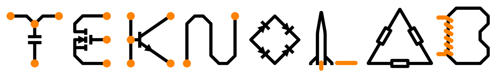

▶
Drop a video file in as "your-video-1.mp4" — this frame will play it directly.
01
Tilt Wing VTOL
A plane that can takeoff without a runway, because it does not give a fuck.
View project ↗
We build shit, for fun.
A plane that can takeoff without a runway, because it does not give a fuck.
View project ↗
Describe the second project the same way — what it is, the core feature, and why it's worth showing. One image or a short screen recording works well here.
View project ↗A third slot for a walkthrough, demo reel, or before/after clip. Alternating the layout keeps a long page from feeling monotonous as you add more.
View project ↗